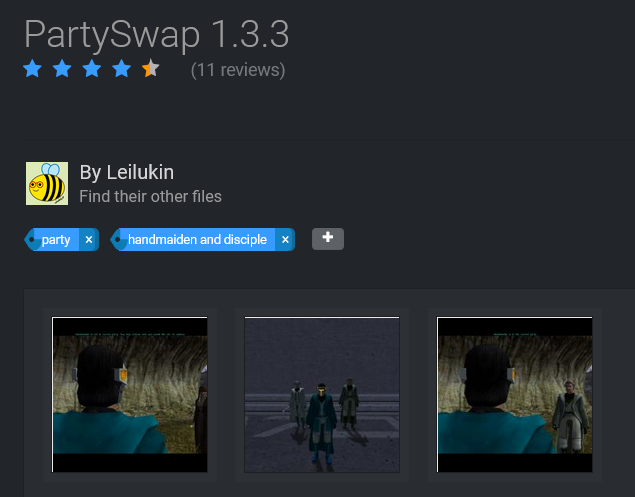

On Me Taking Over the Management and Development of DarthTyren's PartySwap Mod
Originally published on July 12, 2023
Starting from July 11, 2023, I, Leilukin, have officially taken over the management and development of DarthTyren's PartySwap mod for Star Wars: Knights of the Old Republic: The Sith Lords.
PartySwap is a mod that allows you to recruit both Handmaiden and Disciple as party members in a single playthrough regardless of the player character's gender. Since its release on May 21, 2015, PartySwap has been one of the most popular KotOR 2 mods, for very good reasons: it is an excellent mod from concept and execution on both story and technical standpoints. Even though PartySwap was not the first mod that allows a female player character to recruit Handmaiden as a party member, it was the first that actually makes both Handmaiden and Disciple join your party in the same playthrough, regardless of the player character's gender. It is a further testament to PartySwap's quality that it has been included in the KotOR subreddit's mod builds, which are known for high-standards for mod quality, and described by the mod builds as a legendary mod.
Developing and maintaining a highly regarded mod like PartySwap is no small task, as it requires both time and skill. At the end of the day, video game modding is a hobby, and generally modders create mods out of passion for and interest in the source material, and not for profit. Interests can change, especially when it is caused by real-life factors. Therefore, it is understandable that on May 2, 2023, nearly 8 years after the initial release of PartySwap, DarthTyren announced his intention of stepping away from KotOR modding and transferring the management of PartySwap in the mod's thread on the Deadly Stream forums:
CONFESSION TIME: I've kinda taken a break from KotOR modding and Star Wars in general, as I have far greater pursuits to occupy myself with. I've been doing a lot of writing and playing other games that before I never would have given thought to, not to mention taking my faith far more seriously. Logically, that means certain things would have to fall to the side to make room, and Star Wars ended up being one of those things I lost interest in, something I never thought possible.
This puts the future of the mod in a bit of a pickle: I can't spend much time working on keeping it updated, because that would require sinking hours of productivity into playtesting that I can't commit to anymore. I apologize for my silence and my absence, but only now have I actually gained the courage to say as much. So, though it pains me greatly, and I'll probably regret it in the short-term, after much careful contemplation on the matter, I have to believe this is what's best:
PartySwap is up for adoption.
If you would be interested in taking over future development, send me a DM explaining why you're the right person for the role and what your plans for the mod would be going forward. Why such a fuss? It sounds lame, but this mod is the biggest contribution I've made to the world to date. I don't want to just hand it over and suddenly have it botched and butchered beyond recognition like Disney's Star Wars - so yes, there's a bit of pride here. I feel like I'm handing over my child.
Until next time.
After seeing DarthTyren's announcement, I contacted him via Deadly Stream's private message system to volunteer myself to take over future development of PartySwap, since I believed I am qualified for the task for a couple of reasons: I have used PartySwap in my own playthroughs, and as a KotOR modder with a fair amount of experience myself (I had started making mods for the KotOR games since 2016), I am very familiar with how the PartySwap works technical-wise, which is why I was able to make a compatibility patch for PartySwap and Extended Enclave. I am still involved in KotOR modding, and regularly participating in the KotOR Subreddit Discord server to provide support for KotOR modding.
In July 11, 2023, DarthTyren announced his decision to hand over the development and management of PartySwap to me:
Everyone give a nice, warm welcome to the new manager of PartySwap: @Leilukin!
I'm aware how long I took with this announcement. I sat on this decision for months, but with Leilukin's current activity level in the community and as a modder, as well as her familiarity with the mod and how it works and her vision for the future, there really was no one else this mod could be passed off to.
I want to thank everyone who supported me and PartySwap over the last several years, and even as I step away from modding and Star Wars entirely, I hope you'll join me in wishing Leilukin the best.
For the last time...
Darth Tyren has spoken!
It is a huge honour to be trusted with the task of managing one of the most popular mods for the KotOR games by the mod's author himself. I totally understand that Tyren did not make this decision lightly, and I fully intend to use my new role as the new manager of PartySwap responsibly.
In order to make future management of the mod file hosted on Deadly Stream smoother, Snigaroo, one of the administrators of Deadly Stream, has also transferred PartySwap's file ownership on the website to me upon DarthTyren's request. As a result, from now on, when you visit PartySwap's download page on Deadly Stream, you will see me as the file owner.
My plan for the future of PartySwap would be maintaining the mod and keeping the mod as bug-free as possible, and ensuring compatibility with the KotOR subreddit's mod builds. I might also add compatibility patches for other mods if such a need arises. Therefore, if you encounter any bug or issue with PartySwap, I am the person to report to.
I would like to thank DarthTyren for his effort in making and maintaining PartySwap throughout the years, and his trust in my capability in managing his mod.